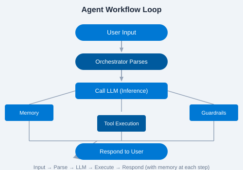

Let's build a simple agent that greets users and remembers their name.
import { Agent, AgentClient } from "@microsoft/agents";
import { DefaultAzureCredential } from "@azure/identity";
const agent = new Agent({
name: "GreeterAgent",
instructions: "You are a friendly greeter. Greet the user warmly and remember their name.",
model: "gpt-4o",
auth: new DefaultAzureCredential(),
});
const client = new AgentClient(agent);
const response = await client.sendMessage("Hi, I'm Snehal!");
console.log(response.text);| Property | Description | Example |
|---|---|---|
name | Unique identifier | "GreeterAgent" |
instructions | System prompt defining behavior | "You are a friendly..." |
model | LLM to use | "gpt-4o" |
temperature | Creativity (0-1) | 0.7 |
An agent progresses through these states:

language property to the instructions and test with "Hello" in Spanish, French, and Japanese.